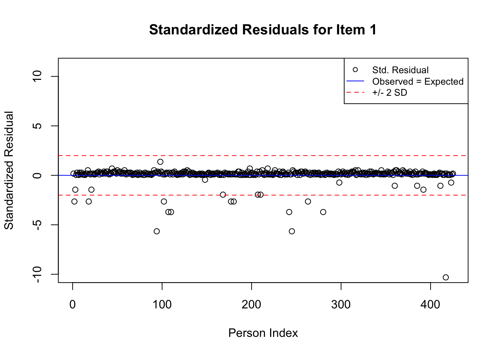
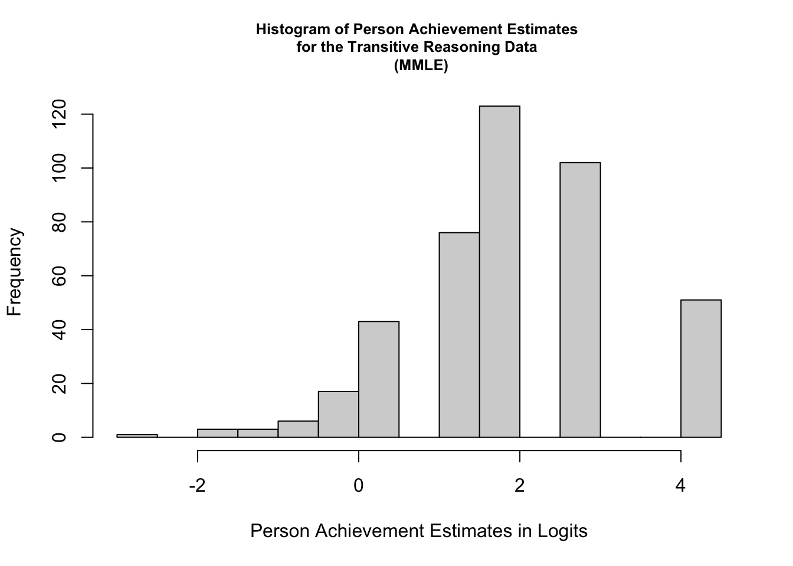
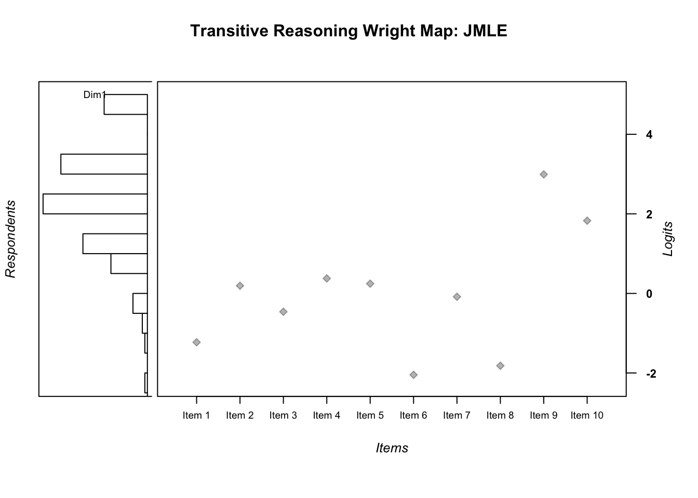

Chapter 2 Dichotomous Rasch Model
This chapter provides a basic overview of the dichotomous Rasch model, along with guidance for analyzing data with the dichotomous Rasch model using R. We use data from a transitive reasoning assessment presented by (Sijtsma and Molenaar 2002) to illustrate the analysis using Conditional Maximum Likelihood Estimation (CMLE) with the Extended Rasch Modeling “eRm” package (Mair, Hatzinger, and Maier 2021). Then, we illustrate the application of the dichotomous Rasch model using Marginal Maximum Likelihood Estimation (MMLE) and Joint Maximum Likelihood Estimation (JMLE) with the Test Analysis Modules (“TAM”) package (Robitzsch, Kiefer, and Wu 2021). After the analyses are complete, we present an example description of the results. The chapter concludes with a challenge exercise and resources for further study.
Overview of the Dichotomous Rasch Model
The dichotomous Rasch model (Rasch 1960) is the simplest model in the Rasch family of models (Wright and Mok 2004). It was designed for use with ordinal data that are scored in two categories (usually 0 or 1). The dichotomous Rasch model uses sum scores from these ordinal responses to calculate interval-level estimates that represent person locations (i.e., person ability or person achievement) and item locations (i.e., the difficulty to provide a correct or positive response) on a linear scale that represents the latent variable (the log-odds or “logit” scale). The difference between person and item locations can be used to calculate the probability for a correct or positive response (x = 1), rather than an incorrect or negative response (x = 0).
The equation for the dichotomous Rasch model can be expressed in log-odds form as follows:
\[\begin{equation}\tag{2.1}\ln_{}{}\left[\frac{\phi_{n i 1}}{\phi_{n i 0}}\right]=\theta_{n}-\delta_{i}\end{equation}\]
The Rasch model predicts the probability of person n on item i providing a correct or positive (x = 1), rather than an incorrect or negative (x = 0) response, given person locations (i.e., ability, achievement, θn) and item locations (i.e., difficulty, δi), as expressed on the logit scale.
Rasch Model Requirements
Estimates that are calculated using the dichotomous Rasch model can only be meaningfully interpreted if there is evidence that the data approximate the requirements for the model. Key among dichotomous Rasch model requirements are the following:
- Unidimensionality: A single latent variable is sufficient to explain most of the variation in item responses
- Local independence: After controlling for the latent variable, there is no substantial association between the responses to individual items
- Person-invariant item estimates: Item locations do not depend on (i.e., are independent from) the persons whose responses are used to estimate them
- Item-invariant person estimates: Person locations do not depend on (i.e., are independent from) the items used to estimate them
Evidence that data approximate these requirements provides support for the meaningful interpretation and use of item and person estimates on the logit scale as indicators of item and person locations on the latent variable. In practice, many analysts evaluate some or all of these requirements using various indicators of model-data fit for the facets in a Rasch model (in this case, items and persons). In the current chapter, we provide some basic code for calculating some popular residual-based fit indices for items and persons. We explore issues related to model requirements and evaluating model-data fit in more detail in Chapter 3.
2.1 Example Data: Transitive Reasoning Test
In this chapter, we will be working with data from a transitive reasoning test, which was designed to measure students’ ability to reason about the relationships among physical objects. The transitive reasoning data were collected from a one-on-one interactive assessment in which an experimenter presented students with a set of objects, such as sticks, balls, cubes, and discs. The following description is given in Sijtsma and Molenaar (2002), 31-32:
The items for transitive reasoning had the following structure. A typical item used three sticks, here denoted A, B, and C, of different length, denoted Y, such that YA < YB < YC. The actual test taking had the form of a conversation between experimenter and child in which the sticks were identified by their colors rather than letters. First, sticks A and B were presented to a child, who was allowed to pick them up and compare their lengths, for example, by placing them next to each other on a table.
Next, sticks B and C were presented and compared. Then all three sticks were displayed in a random order at large mutual distances so that their length differences were imperceptible, and the child was asked to infer the relation between sticks A and C from his or her knowledge of the relationship in the other two pairs.
The transitive reasoning items varied in terms of the property students were asked to reason about (length, weight, area). The tasks also varied in terms of the number of physical objects that students were asked to reason about, and whether the comparison tasks involved equalities, inequalities, or a mixture of equalities and inequalities. The characteristics of the transitive reasoning data are summarized in the following table:
| Task | Property | Format | Objects | Measures |
|---|---|---|---|---|
| 1 | Length | YA > YB > YC | Sticks | 12, 11.5, 11 (cm) |
| 2 | Length | YA = YB = YC = YD | Tubes | 12 (cm) |
| 3 | Weight | YA > YB > YC | Tubes | 45, 25, 18 (g) |
| 4 | Weight | YA = YB = YC = YD | Cubes | 65 (g) |
| 5 | Weight | YA < YB < YC | Balls | 40, 50, 70 (g) |
| 6 | Area | YA > YB> YC | Discs | 2.5, 7, 6.5 (diameter; cm) |
| 7 | Length | YA > YB = YC | Sticks | 28.5, 27.5, 27.5 (cm) |
| 8 | Weight | YA >YB = YC | Balls | 65, 40, 40 (g) |
| 9 | Length | YA = YB = YC = YD | Sticks | 12.5, 12.5, 13, 13 (cm) |
| 10 | Weight | YA = YB < YC = YD | Balls | 60, 60, 100, 100 (g) |
2.2 Dichotomous Rasch Model Analysis with CMLE in eRm
In the next section, we provide a step-by-step demonstration of a dichotomous Rasch model analysis using the Extended Rasch Modeling, or eRm package (Mair, Hatzinger, and Maier 2021), which uses Conditional Maximum Likelihood Estimation (CMLE). We encourage readers to use the example data set that is provided in the online supplement to conduct the analysis along with us.
Prepare for the Analyses
We selected eRm for the first illustration in the current chapter because it includes functions for applying the dichotomous Rasch model that are relatively straightforward to use and interpret. Please note that the “eRm” package uses the Conditional Maximum Likelihood Estimation (CMLE) method to estimate Rasch model parameters. As a result, estimates from the eRm package are not directly comparable to estimates obtained using other estimation methods. Later in this chapter, we have included illustrations of dichotomous Rasch model analyses with the Test Analysis Modules or TAM package (Robitzsch, Kiefer, and Wu 2021) with Marginal Maximum Likelihood Estimation (MMLE). We also provide an illustration with TAM using Joint Maximum Likelihood Estimation (JMLE), which produces comparable estimates to some popular standalone Rasch software programs, such as Winsteps (Linacre 2020a) and Facets (Linacre 2020b).
To get started with the eRm package, view the citation information, and then install and load it into your R environment using the following code:
citation("eRm")##
## To cite package 'eRm' in publications use:
##
## ###############################################################################
## The current Package Version:
##
## Mair, P., Hatzinger, R., & Maier M. J. (2021). eRm: Extended Rasch
## Modeling. 1.0-2. https://cran.r-project.org/package=eRm
##
## ###############################################################################
## The original JSS Article:
##
## Mair, P., & Hatzinger, R. (2007). Extended Rasch modeling: The eRm
## package for the application of IRT models in R. Journal of
## Statistical Software, 20(9), 1-20. https://www.jstatsoft.org/v20/i09
##
## ###############################################################################
## Article about CML Estimation in eRm:
##
## Mair, P., & Hatzinger, R. (2007). CML based estimation of extended
## Rasch models with the eRm package in R. Psychology Science, 49(1),
## 26-43.
##
## ###############################################################################
## Article about LLRAs in eRm:
##
## Hatzinger, R., & Rusch, T. (2009). IRT models with relaxed
## assumptions in eRm: A manual-like instruction. Psychology Science
## Quarterly, 51(1), 87-120.
##
## ###############################################################################
## Book Chapter about LLRAs:
##
## Rusch T., Maier M. J., & Hatzinger R. (2013). Linear logistic models
## with relaxed assumptions in R. In: B. Lausen, D. van den Poel, & A.
## Ultsch (Eds.) Algorithms from and for Nature and Life.New York:
## Springer. 337-347. http://dx.doi.org/10.1007/978-3-319-00035-0_34
##
## ###############################################################################
## Article about the performance of Quasi-Exact Tests in eRm:
##
## Koller, I., Maier, M. J., & Hatzinger, R. (2015). An Empirical Power
## Analysis of Quasi-Exact Tests for the Rasch Model: Measurement
## Invariance in Small Samples. Methodology, 11(2), 45-54.
## http://dx.doi.org/10.1027/1614-2241/a000090
##
## ###############################################################################
## Article about the Performance of the nonparametric Q3 Tests in eRm:
##
## Debelak, R., & Koller, I. (2019). Testing the Local Independence
## Assumption of the Rasch Model With Q3-Based Nonparametric Model
## Tests. Applied Psychological Measurement
## https://doi.org/10.1177/0146621619835501
##
## To see these entries in BibTeX format, use 'print(<citation>,
## bibtex=TRUE)', 'toBibtex(.)', or set
## 'options(citation.bibtex.max=999)'.#install.packages("eRm")
library("eRm")Now that we have installed and loaded the package to our R session, we are ready to import the data.
In this book, we use the function read.csv() to import data that are stored using comma separated values. We encourage readers to use their preferred method for importing data files into R or R Studio. Please note that if you use read.csv() you will need to specify the file path to the location at which the data file is stored on your computer or set your working directory to the folder in which you have saved the data.
First, we will import the data using read.csv() and store it in an object called transreas:
transreas <- read.csv("transreas.csv")Next, we will explore the data using descriptive statistics using the summary() function:
summary(transreas)## Student Grade task_01 task_02
## Min. : 1 Min. :2.000 Min. :0.0000 Min. :0.0000
## 1st Qu.:107 1st Qu.:3.000 1st Qu.:1.0000 1st Qu.:1.0000
## Median :213 Median :4.000 Median :1.0000 Median :1.0000
## Mean :213 Mean :4.005 Mean :0.9412 Mean :0.8094
## 3rd Qu.:319 3rd Qu.:5.000 3rd Qu.:1.0000 3rd Qu.:1.0000
## Max. :425 Max. :6.000 Max. :1.0000 Max. :1.0000
## task_03 task_04 task_05 task_06
## Min. :0.0000 Min. :0.0000 Min. :0.0000 Min. :0.0000
## 1st Qu.:1.0000 1st Qu.:1.0000 1st Qu.:1.0000 1st Qu.:1.0000
## Median :1.0000 Median :1.0000 Median :1.0000 Median :1.0000
## Mean :0.8847 Mean :0.7835 Mean :0.8024 Mean :0.9741
## 3rd Qu.:1.0000 3rd Qu.:1.0000 3rd Qu.:1.0000 3rd Qu.:1.0000
## Max. :1.0000 Max. :1.0000 Max. :1.0000 Max. :1.0000
## task_07 task_08 task_09 task_10
## Min. :0.0000 Min. :0.0000 Min. :0.0000 Min. :0.00
## 1st Qu.:1.0000 1st Qu.:1.0000 1st Qu.:0.0000 1st Qu.:0.00
## Median :1.0000 Median :1.0000 Median :0.0000 Median :1.00
## Mean :0.8447 Mean :0.9671 Mean :0.3012 Mean :0.52
## 3rd Qu.:1.0000 3rd Qu.:1.0000 3rd Qu.:1.0000 3rd Qu.:1.00
## Max. :1.0000 Max. :1.0000 Max. :1.0000 Max. :1.00From the summary of transreas, we can see there are no missing data. We can also get a general sense of the scales, range, and distribution of each variable in the dataset.
Specifically, we can see that Student ID numbers range from 1 to 425, student grade levels range from 2 to 6, and that all tasks have scores in both of the dichotomous categories (0 and 1). We can also get a sense for the range of item difficulty by examining the mean for each task, which is the proportion-correct statistic (item difficulty estimate for Classical Test Theory).
Run the Dichotomous Rasch Model
To run the dichotomous Rasch Model using the eRm package, need to isolate the item response matrix from the other variables in the data (student IDs and grade level). To do this, we will create an object made up of only the item responses by removing the first two variables from the data. We will remove the descriptive variables using the subset() function with the select= option. We will save the response matrix in a new object called transreas.responses.
transreas.responses <- subset(transreas, select = -c(Student, Grade))Next, we will use summary() to calculate descriptive statistics for the transreas.responses object to check our work and ensure that the responses are ready for analysis:
summary(transreas.responses)## task_01 task_02 task_03 task_04
## Min. :0.0000 Min. :0.0000 Min. :0.0000 Min. :0.0000
## 1st Qu.:1.0000 1st Qu.:1.0000 1st Qu.:1.0000 1st Qu.:1.0000
## Median :1.0000 Median :1.0000 Median :1.0000 Median :1.0000
## Mean :0.9412 Mean :0.8094 Mean :0.8847 Mean :0.7835
## 3rd Qu.:1.0000 3rd Qu.:1.0000 3rd Qu.:1.0000 3rd Qu.:1.0000
## Max. :1.0000 Max. :1.0000 Max. :1.0000 Max. :1.0000
## task_05 task_06 task_07 task_08
## Min. :0.0000 Min. :0.0000 Min. :0.0000 Min. :0.0000
## 1st Qu.:1.0000 1st Qu.:1.0000 1st Qu.:1.0000 1st Qu.:1.0000
## Median :1.0000 Median :1.0000 Median :1.0000 Median :1.0000
## Mean :0.8024 Mean :0.9741 Mean :0.8447 Mean :0.9671
## 3rd Qu.:1.0000 3rd Qu.:1.0000 3rd Qu.:1.0000 3rd Qu.:1.0000
## Max. :1.0000 Max. :1.0000 Max. :1.0000 Max. :1.0000
## task_09 task_10
## Min. :0.0000 Min. :0.00
## 1st Qu.:0.0000 1st Qu.:0.00
## Median :0.0000 Median :1.00
## Mean :0.3012 Mean :0.52
## 3rd Qu.:1.0000 3rd Qu.:1.00
## Max. :1.0000 Max. :1.00Now, we are ready to run the dichotomous Rasch model on the transitive reasoning response data We will use the RM() function to run the model and store the results in an object called dichot.transreas:
dichot.transreas <- RM(transreas.responses)Overall Model Summary
The next step is to request a summary of the model estimation results in order to begin to understand the results from the analysis. We can do so by applying the summary() function to the model object:
# Request a summary of the model results
summary(dichot.transreas)##
## Results of RM estimation:
##
## Call: RM(X = transreas.responses)
##
## Conditional log-likelihood: -921.3465
## Number of iterations: 18
## Number of parameters: 9
##
## Item (Category) Difficulty Parameters (eta): with 0.95 CI:
## Estimate Std. Error lower CI upper CI
## task_02 0.258 0.133 -0.003 0.518
## task_03 -0.416 0.157 -0.723 -0.109
## task_04 0.441 0.128 0.190 0.692
## task_05 0.309 0.131 0.052 0.567
## task_06 -2.175 0.292 -2.747 -1.604
## task_07 -0.025 0.141 -0.302 0.252
## task_08 -1.909 0.262 -2.423 -1.395
## task_09 2.923 0.130 2.668 3.179
## task_10 1.836 0.115 1.610 2.062
##
## Item Easiness Parameters (beta) with 0.95 CI:
## Estimate Std. Error lower CI upper CI
## beta task_01 1.243 0.204 0.842 1.643
## beta task_02 -0.258 0.133 -0.518 0.003
## beta task_03 0.416 0.157 0.109 0.723
## beta task_04 -0.441 0.128 -0.692 -0.190
## beta task_05 -0.309 0.131 -0.567 -0.052
## beta task_06 2.175 0.292 1.604 2.747
## beta task_07 0.025 0.141 -0.252 0.302
## beta task_08 1.909 0.262 1.395 2.423
## beta task_09 -2.923 0.130 -3.179 -2.668
## beta task_10 -1.836 0.115 -2.062 -1.610The summary of the dichotomous Rasch model output includes the Conditional Log-likelihood statistic, details about the number of iterations and model parameters, and a table with item parameters, their standard errors, and confidence intervals. It is important to note that the item parameters included in this preliminary output are item easiness parameters– not item difficulty parameters. We will examine item difficulty parameters in detail later in our analysis.
Wright Map
A useful feature of Rasch models is that when there is acceptable fit between the model and the data (discussed in detail in Chapter 3), it is possible to visualize and compare item and person locations on a single linear continuum. Professor Bejamin D. Wright popularized an approach to displaying Rasch model results on a linear continuum, and this technique has been widely adopted by Rasch measurement researchers across disciplines. In his honor, these displays are often called Wright Maps. In the literature, researchers also refer to these displays as Variable Maps. Please see Wilson (2011) for a discussion of the term Wright Map.
As the next step in our analysis, we will create a Wright Map from our model results. We will create the plot using the function PlotPImap() on the model object (dichot.transreas). We will set the option for displaying threshold labels as FALSE, because we are working with dichotomous data. We also used the main.title=option to customize the title of the plot.
plotPImap(dichot.transreas, main = "Transitive Reasoning Assessment Wright Map")
In this Wright Map display, the results from the dichotomous Rasch model analysis of the Transitive Reasoning data are summarized graphically. The figure is organized as follows:
Starting at the bottom of the figure, the horizontal axis (labeled Latent Dimension) is the logit scale that represents the latent variable. In the application of the Transitive Reasoning data, lower numbers indicate less transitive reasoning ability, and higher numbers indicate more transitive reasoning ability.
The central panel of the figure shows item difficulty locations on the logit scale for the 10 transitive reasoning tasks that were included in the analysis; the y-axis for this panel shows the item labels. By default in eRm, the items are ordered according to their original order in the response matrix. The items can be ordered by difficulty by adding “sorted = TRUE” as an argument in the plotPImap() call. For each item, a solid circle plotting symbol shows the location estimate.
The upper panel of the figure shows a histogram of person (in this case, student) location estimates on the logit scale. Small vertical lines on the x-axis of this histogram show the points on the logit scale at which information (variance) is maximized for the sample of persons and items in the analysis. These lines can be omitted by adding “irug = FALSE” as an argument in the plotPImap() call.
Even though it is not appropriate to fully interpret item and person locations on the logit scale until there is evidence of acceptable model-data fit, we recommend examining the Wright Map during the preliminary stages of an item analysis to get a general sense of the model results and to identify any potential scoring or data entry errors.
A quick glance at the Wright Map suggests that, on average, the persons (students) are located higher on the logit scale compared to the average item (task) locations. In addition, there appears to be a relatively wide spread of person and item locations on the logit scale, such that the transitive reasoning test appears to be a useful tool for identifying differences in person locations and item locations on the latent variable. We will return to this display for more exploration after checking for acceptable model-data fit, among other psychometric properties.
Item Parameters
As the next step in our analysis, we will examine the item parameters in detail. The eRm package provides several options with which analysts can find and examine item and item location parameters. For example, one way to obtain the overall item location parameters (\(\delta\)) is to extract the eta parameters from the model object using the $ operator. We extract these parameters, print them to the console, and calculate summary statistics for them with the following code:
difficulty <- dichot.transreas$etapar
difficulty## task_02 task_03 task_04 task_05 task_06 task_07
## 0.25775001 -0.41581384 0.44093780 0.30941151 -2.17531698 -0.02481129
## task_08 task_09 task_10
## -1.90884851 2.92343872 1.83581566Because of the nature of the estimation process used in eRm, the item.locations object that we just created does not include the location estimate for the first item. One can calculate the location for item 1 by subtracting the sum of the item locations from zero. In the following code, we find the location for item 1, and then create a new object with all 10 item locations:
n.items <- ncol(transreas.responses)
i1 <- 0 - sum(difficulty[1:(n.items - 1)])
difficulty.all <- c(i1, difficulty[c(1:(n.items - 1))])
difficulty.all## task_02 task_03 task_04 task_05 task_06
## -1.24256308 0.25775001 -0.41581384 0.44093780 0.30941151 -2.17531698
## task_07 task_08 task_09 task_10
## -0.02481129 -1.90884851 2.92343872 1.83581566Alternatively, we could find the item difficulty parameters by extracting the item easiness parameters from the model object (beta parameters) and multiplying them by -1 to find item difficulty:
difficulty2 <- dichot.transreas$betapar * -1
difficulty2## beta task_01 beta task_02 beta task_03 beta task_04 beta task_05 beta task_06
## -1.24256308 0.25775001 -0.41581384 0.44093780 0.30941151 -2.17531698
## beta task_07 beta task_08 beta task_09 beta task_10
## -0.02481129 -1.90884851 2.92343872 1.83581566The item difficulty parameters (xsi) are the item location estimates on the logit scale that represents the latent variable. Assuming that the responses are scored such that lower scores (x = 0) indicate lower locations on the latent variable (e.g., incorrect, negative, or absent responses), then lower item estimates on the logit scale indicate items that are more difficult or require persons to have relatively higher locations on the construct to provide a correct response. On the other hand, higher item estimates on the logit scale indicate items that are easier or require persons to have relatively lower locations on the construct to provide a correct response. In our analysis, Task 9 is the most difficult item (\(\delta\) = 2.92), whereas Task 6 is the easiest item (\(\delta\) = -2.18).
Next, we will examine item standard errors. The standard errors are reported for all of the items as part of the beta (item easiness) parameters:
dichot.transreas$se.beta## [1] 0.2043488 0.1327967 0.1566695 0.1282289 0.1314316 0.2916385 0.1413876
## [8] 0.2622114 0.1302767 0.1152173The standard error for each item is an estimate of the precision of the item difficulty estimates, where larger standard errors indicate less-precise estimates. Standard errors are reported on the same logit scale as item locations. In our analysis, the standard errors range from 0.11 for Task 9 and Task 10, which were the items with the most precise estimates, to 0.31 for Task 6, which was the item with the least precise estimate. These differences largely reflect differences in item targeting to the person locations (see the Wright Map above).
Next, let’s calculate descriptive statistics to better understand the distribution of the item locations and standard errors. We will do so using the summary() function and the sd() function:
summary(difficulty.all)## Min. 1st Qu. Median Mean 3rd Qu. Max.
## -2.1753 -1.0359 0.1165 0.0000 0.4081 2.9234sd(difficulty.all)## [1] 1.576441summary(dichot.transreas$se.beta)## Min. 1st Qu. Median Mean 3rd Qu. Max.
## 0.1152 0.1306 0.1371 0.1694 0.1924 0.2916sd(dichot.transreas$se.beta)## [1] 0.06206381We can also visualize the item difficulty estimates using a simple histogram by using the hist() function. In our plot, we specified a custom title using main = and a custom x-axis label using xlab =:
hist(difficulty.all, main = "Histogram of Item Difficulty Estimates for the Transitive Reasoning Data",
xlab = "Item Difficulty Estimates in Logits")
Item Response Functions
We will examine graphical displays of item difficulty using item response functions (IRFs). With the dichotomous Rasch model, the eRm package creates plots of the probability for a correct or positive response (x = 1), conditional on person locations on the latent variable. In the following code, we use plotICC() from eRm to create IRF plots for the items in our analysis. We included “ask = FALSE” in our function call in order to generate all of the plots at once. For brevity, we have only included plots for the first three items in this book. The specific items to be plotted can be controlled by changing the items included in the items.to.plot object.
items.to.plot <- c(1:3)
plotICC(dichot.transreas, ask = FALSE, item.subset = items.to.plot)
This code generates IRFs for the first three items in our analysis. In each item-specific plot, the x-axis is the logit scale that represents the latent variable; this scale represents transitive reasoning ability in our example. The y-axis is the probability for a correct or positive response, conditional on person locations on the latent variable.
Person Parameters and Item Fit
In the eRm package, it is necessary to calculate person parameters before item fit statistics can be calculated. Accordingly, we will proceed with a brief examination of person parameters before we conduct item fit analyses. In practice, we recommend examining item fit before examining and interpreting item locations in detail.
Person Parameters
In the following code, we use the person.parameter() function to estimate student locations and save the results in an object called student.locations. Then, we save the theta estimates (i.e., achievement estimates) in a data.frame object called achievement, and add student identification numbers for reference.
student.locations <- person.parameter(dichot.transreas)
achievement <- student.locations$theta.table
# Add identification numbers to the person locations:
achievement$id <- rownames(achievement)The estimation procedure in eRm does not directly produce parameter estimates for persons with extreme scores. In our example, 51 students earned extreme scores on the transitive reasoning assessment, so achievement estimates are reported for the 374 students with non-extreme scores. The achievement estimates for the 51 students with extreme scores are extrapolated, and standard errors are not calculated.
We can add standard errors for the student achievement estimates to our achievement object as follows:
se <- as.data.frame(student.locations$se.theta$NAgroup1)
se$id <- rownames(se)
names(se) <- c("person_se", "id")
achievement.with.se <- merge(achievement, se, by = "id" )As a final step in examining the person parameters, we will calculate descriptive statistics and use a histogram to examine the distribution of student locations on the logit scale:
summary(achievement)## Person Parameter NAgroup Interpolated id
## Min. :-2.916 Min. :1 Mode :logical Length:425
## 1st Qu.: 1.160 1st Qu.:1 FALSE:374 Class :character
## Median : 1.932 Median :1 TRUE :51 Mode :character
## Mean : 2.010 Mean :1
## 3rd Qu.: 3.028 3rd Qu.:1
## Max. : 4.201 Max. :1hist(achievement$`Person Parameter`, main = "Histogram of Person Achievement Estimates \nfor the Transitive Reasoning Data",
xlab = "Person Achievement Estimates in Logits")
Item Fit
Next, we will conduct a brief exploration of item fit statistics. We explore item fit in more detail in Chapter 3.
To calculate numeric item fit statistics, we will use the function itemfit() from eRm on the person parameter object (person.locations.estimate). This function produces several item fit statistics, including infit mean square error (MSE), outfit MSE, and standardized infit and outfit MSE statistics. We will store the item fit results in a new object called item.fit, and then format this object as a data.frame object for easy manipulation and exporting:
student.locations <- person.parameter(dichot.transreas)
item.fit <- itemfit(student.locations)
item.fit##
## Itemfit Statistics:
## Chisq df p-value Outfit MSQ Infit MSQ Outfit t Infit t Discrim
## task_01 245.550 373 1.000 0.657 0.761 -1.327 -1.622 0.455
## task_02 421.904 373 0.041 1.128 1.087 1.071 1.187 0.054
## task_03 218.155 373 1.000 0.583 0.745 -2.742 -2.688 0.583
## task_04 478.894 373 0.000 1.280 1.158 2.442 2.268 -0.014
## task_05 346.015 373 0.839 0.925 0.991 -0.625 -0.109 0.184
## task_06 65.613 373 1.000 0.175 0.611 -2.789 -1.781 0.620
## task_07 244.494 373 1.000 0.654 0.804 -2.768 -2.475 0.493
## task_08 125.478 373 1.000 0.336 0.687 -2.205 -1.569 0.563
## task_09 394.207 373 0.216 1.054 0.904 0.462 -1.727 0.022
## task_10 326.534 373 0.960 0.873 0.898 -1.822 -2.408 0.226Next, we will request a summary of the numeric fit statistics using the summary() function:
summary(item.fit)## Length Class Mode
## i.fit 10 -none- numeric
## i.df 10 -none- numeric
## st.res 3740 -none- numeric
## i.outfitMSQ 10 -none- numeric
## i.infitMSQ 10 -none- numeric
## i.outfitZ 10 -none- numeric
## i.infitZ 10 -none- numeric
## i.disc 10 -none- numericThe item.fit object includes mean square error (MSE) and standardized (Z) versions of the Outfit and Infit statistics for each item included in the analysis.These statistics are summaries of the residuals associated with each item. When data fit Rasch model expectations, the MSE versions of Outfit and Infit are expected to be close to 1.00 and the standardized versions of Outfit and Infit are expected to be around 0.00. Please refer to Chapter 3 for a more-detailed discussion of item fit.
As a final step in examining item fit, we will calculate the reliability of separation statistic for items:
# Get Item scores
ItemScores <- colSums(transreas.responses)
# Get Item SD
ItemSD <- apply(transreas.responses,2,sd)
# Calculate the se of the Item
ItemSE <- ItemSD/sqrt(length(ItemSD))
# compute the Observed Variance (also known as Total Person Variability or Squared Standard Deviation)
SSD.ItemScores <- var(ItemScores)
# compute the Mean Square Measurement error (also known as Model Error variance)
Item.MSE <- sum((ItemSE)^2) / length(ItemSE)
# compute the Item Separation Reliability
item.separation.reliability <- (SSD.ItemScores-Item.MSE) / SSD.ItemScores
item.separation.reliability## [1] 0.9999984Briefly, the item reliability of separation statistic describes the degree to which items have unique locations on the logit-scale. Please refer to Chapter 3 for more details about item reliability analysis.
Person Fit
Next, we will conduct a brief exploration of person fit. To calculate numeric person fit statistics, we will use the function personfit() from eRm on the person parameter object (person.locations.estimate). This function produces several person fit statistics, including infit mean square error (MSE), outfit MSE, and standardized infit and outfit MSE statistics. We will store the person fit results in a new object called person.fit, and then format this object as a data.frame for easy manipulation and exporting. Then, we request summaries of the infit MSE and outfit MSE statistics using summary().
person.fit <- personfit(student.locations)
summary(person.fit$p.infitMSQ)## Min. 1st Qu. Median Mean 3rd Qu. Max.
## 0.4060 0.4910 0.7487 0.9102 1.1740 2.2483summary(person.fit$p.outfitMSQ)## Min. 1st Qu. Median Mean 3rd Qu. Max.
## 0.1723 0.2399 0.5468 0.7665 0.9592 7.3060We can calculate the reliability of person separation statistic using eRm. This value is interpreted similarly to Cronbach’s alpha (Cronbach 1951) when there is good fit between the data and the Rasch model (Andrich 1982). However, it is important to note that these coefficients are not equivalent because alpha is based on an assumption of linearity and the Rasch reliabilty of separation statistic is based on a linear, interval-level scale when good model-data fit (discussed in Chapter 3) is observed.
person_rel <- SepRel(student.locations)
person_rel$sep.rel## [1] 0.2061478Summarize the Results in Tables
As a final step, we will create tables that summarize the calibrations of the items and persons from our dichotomous Rasch model analysis with eRm.
Table 1 is an overall model summary table that provides an overview of the logit scale locations, standard errors, fit statistics, and reliability statistics for items and persons. This type of table is useful for reporting the results from Rasch model analyses because it provides a quick overview of the location estimates and numeric model-data fit statistics for the items and persons in the analysis.
summary.table.statistics <- c("Logit Scale Location Mean",
"Logit Scale Location SD",
"Standard Error Mean",
"Standard Error SD",
"Outfit MSE Mean",
"Outfit MSE SD",
"Infit MSE Mean",
"Infit MSE SD",
"Std. Outfit Mean",
"Std. Outfit SD",
"Std. Infit Mean",
"Std. Infit SD",
"Reliability of Separation")
item.summary.results <- rbind(mean(difficulty.all),
sd(difficulty.all),
mean(dichot.transreas$se.beta),
sd(dichot.transreas$se.beta),
mean(item.fit$i.outfitMSQ),
sd(item.fit$i.outfitMSQ),
mean(item.fit$i.infitMSQ),
sd(item.fit$i.infitMSQ),
mean(item.fit$i.outfitZ),
sd(item.fit$i.outfitZ),
mean(item.fit$i.infitMSQ),
sd(item.fit$i.infitZ),
item.separation.reliability)
person.summary.results <- rbind(mean(achievement.with.se$`Person Parameter`),
sd(achievement.with.se$`Person Parameter`),
mean(achievement.with.se$person_se, na.rm = TRUE),
sd(achievement.with.se$person_se, na.rm = TRUE),
mean(person.fit$p.outfitMSQ),
sd(person.fit$p.outfitMSQ),
mean(person.fit$p.infitMSQ),
sd(person.fit$p.infitMSQ),
mean(person.fit$p.outfitZ),
sd(person.fit$p.outfitZ),
mean(person.fit$p.infitZ),
sd(person.fit$p.infitZ),
person_rel$sep.rel)
# Round the values for presentation in a table:
item.summary.results_rounded <- round(item.summary.results, digits = 2)
person.summary.results_rounded <- round(person.summary.results, digits = 2)
Table1 <- cbind.data.frame(summary.table.statistics,
item.summary.results_rounded,
person.summary.results_rounded)
# add descriptive column labels:
names(Table1) <- c("Statistic", "Items", "Persons")
Table1## Statistic Items Persons
## X Logit Scale Location Mean 0.00 1.71
## X.1 Logit Scale Location SD 1.58 1.09
## X.2 Standard Error Mean 0.17 0.95
## X.3 Standard Error SD 0.06 0.16
## X.4 Outfit MSE Mean 0.77 0.77
## X.5 Outfit MSE SD 0.35 0.80
## X.6 Infit MSE Mean 0.86 0.91
## X.7 Infit MSE SD 0.18 0.47
## X.8 Std. Outfit Mean -1.03 0.08
## X.9 Std. Outfit SD 1.83 0.64
## X.10 Std. Infit Mean 0.86 -0.12
## X.11 Std. Infit SD 1.67 0.91
## item.separation.reliability Reliability of Separation 1.00 0.21Table 2 is a table that summarizes the calibrations of individual items. For data sets with manageable sample sizes such as the transitive reasoning data example in this chapter, we recommend reporting details about each item in a table similar to this one.
# Calculate the proportion correct for each task:
PropCorrect <- apply(transreas.responses, 2, mean)
# Combine item calibration results in a table:
Table2 <- cbind.data.frame(colnames(transreas.responses),
PropCorrect,
difficulty.all,
dichot.transreas$se.beta,
item.fit$i.outfitMSQ,
item.fit$i.outfitZ,
item.fit$i.infitMSQ,
item.fit$i.infitZ)
names(Table2) <- c("Task ID", "Proportion Correct", "Item Location","Item SE","Outfit MSE","Std. Outfit", "Infit MSE","Std. Infit")
# Sort Table 2 by Item difficulty:
Table2 <- Table2[order(-Table2$`Item Location`),]
# Round the numeric values (all columns except the first one) to 2 digits:
Table2[, -1] <- round(Table2[,-1], digits = 2)
Table2## Task ID Proportion Correct Item Location Item SE Outfit MSE Std. Outfit
## task_09 task_09 0.30 2.92 0.13 1.05 0.46
## task_10 task_10 0.52 1.84 0.12 0.87 -1.82
## task_04 task_04 0.78 0.44 0.13 1.28 2.44
## task_05 task_05 0.80 0.31 0.13 0.93 -0.62
## task_02 task_02 0.81 0.26 0.13 1.13 1.07
## task_07 task_07 0.84 -0.02 0.14 0.65 -2.77
## task_03 task_03 0.88 -0.42 0.16 0.58 -2.74
## task_01 task_01 0.94 -1.24 0.20 0.66 -1.33
## task_08 task_08 0.97 -1.91 0.26 0.34 -2.21
## task_06 task_06 0.97 -2.18 0.29 0.18 -2.79
## Infit MSE Std. Infit
## task_09 0.90 -1.73
## task_10 0.90 -2.41
## task_04 1.16 2.27
## task_05 0.99 -0.11
## task_02 1.09 1.19
## task_07 0.80 -2.47
## task_03 0.75 -2.69
## task_01 0.76 -1.62
## task_08 0.69 -1.57
## task_06 0.61 -1.78Finally, Table 3 provides a summary of the person calibrations. When there is a relatively large person sample size, it may be more useful to present the results as they relate to individual persons or subsets of the person sample as they are relevant to the purpose of the analysis. In the following code, we create Table 3 and print the first 6 lines to the console using the head() function.
# Calculate proportion correct for persons:
PersonPropCorrect <- apply(student.locations$X.ex, 1, mean)
# Combine person calibration results in a table:
Table3 <- cbind.data.frame(achievement.with.se$id,
PersonPropCorrect,
achievement.with.se$`Person Parameter`,
achievement.with.se$person_se,
person.fit$p.outfitMSQ,
person.fit$p.outfitZ,
person.fit$p.infitMSQ,
person.fit$p.infitZ)
names(Table3) <- c("Person ID", "Proportion Correct", "Person Location","Person SE","Outfit MSE","Std. Outfit", "Infit MSE","Std. Infit")
# Round the numeric values (all columns except the first one) to 2 digits:
Table3[, -1] <- round(Table3[,-1], digits = 2)
head(Table3)## Person ID Proportion Correct Person Location Person SE Outfit MSE Std. Outfit
## 1 1 0.8 1.93 0.94 0.24 -0.52
## 2 10 0.6 1.16 0.83 1.10 0.36
## 3 100 0.4 1.16 0.83 5.62 3.50
## 5 101 0.7 3.03 1.19 0.56 -0.37
## 6 102 0.9 0.52 0.77 0.17 0.12
## 8 103 0.7 3.03 1.19 0.73 -0.09
## Infit MSE Std. Infit
## 1 0.41 -1.19
## 2 1.13 0.47
## 3 2.10 2.55
## 5 0.71 -0.57
## 6 0.49 -0.61
## 8 0.80 -0.342.3 Dichotomous Rasch Model Analysis with MMLE in TAM
Next, we will use the “Test Analysis Modules”, or “TAM” package (Robitzsch, Kiefer, and Wu 2021) to run the dichotomous Rasch model analyses. By default, the TAM package applies marginal maximum likelihood estimation (MMLE) to estimate the dichotomous Rasch model. Please keep this estimation approach in mind when comparing the results between TAM and other R packages or software programs that use other estimation techniques, such as Winsteps (Linacre 2020a) or Facets (Linacre 2020b).
Except where there are significant differences between the eRm and TAM procedures, we provide fewer details about the analysis procedures and interpretations in this section compared to the first illustration.
Prepare for the Analyses
To get started with the “TAM” package, install and load it into your R environment using the following code:
citation("TAM")
# install.packages("TAM")
library("TAM")## Loading required package: CDM## Loading required package: mvtnorm## **********************************
## ** CDM 7.5-15 (2020-03-10 14:19:21)
## ** Cognitive Diagnostic Models **
## **********************************## * TAM 3.7-16 (2021-06-24 14:31:37)To facilitate the analysis, we will also use the “WrightMap” package (Irribarra and Freund 2014):
WrightMap:
citation("WrightMap")
# install.packages("WrightMap")
library("WrightMap") If you have not already imported the Transitive Reasoning data and prepared it for analysis as described earlier in this chapter by isolating the response matrix, please do so before continuing with the TAM analyses.
Run the Dichotomous Rasch model
Now, we are ready to run the dichotomous Rasch model on the transitive reasoning response data. We will use the tam.mml() function to run the model and store the results in an object called dichot.transreas. We specified constraint = items in order to obtain item locations that are centered at zero logits for ease of interpretation.
dichot.transreas_MMLE <- tam.mml(transreas.responses, constraint = "items", verbose = FALSE)For brevity, we do not include all of the output from the model function in this book. However, after you run the model, you should see some output in the R console that includes information about each iteration in the estimation process.
Overall Model Summary
The next step is to request a summary of the model estimation results in order to begin to understand the results from the analysis. We can do so by applying the summary() function to the model object:
summary(dichot.transreas_MMLE)## ------------------------------------------------------------
## TAM 3.7-16 (2021-06-24 14:31:37)
## R version 4.1.0 (2021-05-18) x86_64, darwin17.0 | nodename=Chengs-iMac | login=root
##
## Date of Analysis: 2021-07-29 22:30:12
## Time difference of 0.08011818 secs
## Computation time: 0.08011818
##
## Multidimensional Item Response Model in TAM
##
## IRT Model: PCM2
## Call:
## tam.mml(resp = transreas.responses, constraint = "items", verbose = FALSE)
##
## ------------------------------------------------------------
## Number of iterations = 72
## Numeric integration with 21 integration points
##
## Deviance = 3354.91
## Log likelihood = -1677.46
## Number of persons = 425
## Number of persons used = 425
## Number of items = 10
## Number of estimated parameters = 11
## Item threshold parameters = 9
## Item slope parameters = 0
## Regression parameters = 1
## Variance/covariance parameters = 1
##
## AIC = 3377 | penalty=22 | AIC=-2*LL + 2*p
## AIC3 = 3388 | penalty=33 | AIC3=-2*LL + 3*p
## BIC = 3421 | penalty=66.57 | BIC=-2*LL + log(n)*p
## aBIC = 3386 | penalty=31.56 | aBIC=-2*LL + log((n-2)/24)*p (adjusted BIC)
## CAIC = 3432 | penalty=77.57 | CAIC=-2*LL + [log(n)+1]*p (consistent AIC)
## AICc = 3378 | penalty=22.64 | AICc=-2*LL + 2*p + 2*p*(p+1)/(n-p-1) (bias corrected AIC)
## GHP = 0.39728 | GHP=( -LL + p ) / (#Persons * #Items) (Gilula-Haberman log penalty)
##
## ------------------------------------------------------------
## EAP Reliability
## [1] 0.503
## ------------------------------------------------------------
## Covariances and Variances
## [,1]
## [1,] 0.938
## ------------------------------------------------------------
## Correlations and Standard Deviations (in the diagonal)
## [,1]
## [1,] 0.968
## ------------------------------------------------------------
## Regression Coefficients
## [,1]
## [1,] 1.93558
## ------------------------------------------------------------
## Item Parameters -A*Xsi
## item N M xsi.item AXsi_.Cat1 B.Cat1.Dim1
## 1 task_01 425 0.941 -1.233 -1.233 1
## 2 task_02 425 0.809 0.235 0.235 1
## 3 task_03 425 0.885 -0.432 -0.432 1
## 4 task_04 425 0.784 0.418 0.418 1
## 5 task_05 425 0.802 0.286 0.286 1
## 6 task_06 425 0.974 -2.133 -2.133 1
## 7 task_07 425 0.845 -0.047 -0.047 1
## 8 task_08 425 0.967 -1.875 -1.875 1
## 9 task_09 425 0.301 2.938 2.938 1
## 10 task_10 425 0.520 1.842 1.842 1
##
## Item Parameters in IRT parameterization
## item alpha beta
## 1 task_01 1 -1.233
## 2 task_02 1 0.235
## 3 task_03 1 -0.432
## 4 task_04 1 0.418
## 5 task_05 1 0.286
## 6 task_06 1 -2.133
## 7 task_07 1 -0.047
## 8 task_08 1 -1.875
## 9 task_09 1 2.938
## 10 task_10 1 1.842From these results, we suggest taking a quick look at the Item Parameters as reported in the table labeled Item Parameters in IRT parameterization.
Because we ran a Rasch model, the alpha (discrimination) parameters are fixed to a constant value of 1. The beta parameters are the item locations on the latent variable. We will explore the item locations in more detail later in the analysis.
Wright Map
A useful feature of Rasch models is that when there is acceptable fit between the model and the data (discussed in detail in Chapter 3), it is possible to visualize and compare item and person locations on a single linear continuum. Professor Bejamin D. Wright popularized an approach to displaying Rasch model results on a linear continuum, and this technique has been widely adopted by Rasch measurement researchers across disciplines. In his honor, these displays are often called Wright Maps. In the literature, researchers also refer to these displays as Variable Maps. Please see Wilson (2011) for a discussion of the term Wright Map.
As the next step in our analysis, we will use the WrightMap package to create a Wright Map from our model results. We will create the plot using the function IRT.WrightMap() on the model object (dichot.transreas). We will set the option for displaying threshold labels as FALSE, because we are working with dichotomous data. We also used the main.title= option to customize the title of the plot.
IRT.WrightMap(dichot.transreas_MMLE, show.thr.lab=FALSE, main.title = "Transitive Reasoning Wright Map (MMLE)")
In this Wright Map display, the results from the dichotomous Rasch model analysis of the transitive reasoning data are summarized grapihcally. The figure is organized as follows:
The left panel of the plot shows a histogram of respondent (person) locations on the logit scale that represents the latent variable. Units on the logit scale are shown on the far-right axis of the plot (labeled Logits). In the panel with the person locations, the label “Dim1” means that the distribution of person locations is specific to one dimension. In multi-dimensional Rasch model (Briggs and Wilson 2003) and multidimensional IRT analyses (Bonifay 2020) or (Reckase 2009), the Wright Map can show multiple distributions of person locations that correspond to each dimension in the model.
Wright Map illustration
The large central panel of the plot shows the item locations (item difficulty estimates) on the logit scale that represents the latent variable. Light grey diamond shapes show the logit scale location of each item, as labeled on the x-axis.
Even though it is not appropriate to fully interpret item and person locations on the logit scale until there is evidence of acceptable model-data fit, we recommend examining the Wright Map during the preliminary stages of an item analysis to get a general sense of the model results and to identify any potential scoring or data entry errors.
A quick glance at the Wright Map suggests that, on average, the persons are located higher on the logit scale compared to the average item locations. In addition, there appears to be a relatively wide spread of person and item locations on the logit scale, such that the transitive reasoning test appears to be a useful tool for identifying differences in person locations and item locations on the latent variable. We will return to this display for more exploration after checking for acceptable model-data fit, among other psychometric properties.
Item Parameters
As the next step in our analysis, we will examine the item parameters in detail. We will use the $ operator to request the item location estimates that are stored in the item_irt table within the dichot.transreas_MMLE object. Then, we will save the item location estimates in a new object called difficulty_MMLE.
difficulty_MMLE <- as.data.frame(dichot.transreas_MMLE$item_irt$beta)
difficulty_MMLE$se <- dichot.transreas_MMLE$se.AXsi
names(difficulty_MMLE) <- c("item_difficulty", "item_se")By running this code, we have created a data.frame object that includes two variables: item difficulty estimates, and standard errors. The row labels show the item numbers from our response matrix. The item difficulty parameters and standard errors are interpreted in the same way as in the eRm analysis presented earlier in this chapter.
Next, let’s calculate descriptive statistics to better understand the distribution of the item locations and standard errors. We will do so using the summary() function and the sd() function:
summary(difficulty_MMLE)## item_difficulty item_se.V1 item_se.V2
## Min. :-2.13288 Min. :0 Min. :0.07786662
## 1st Qu.:-1.03275 1st Qu.:0 1st Qu.:0.08245890
## Median : 0.09391 Median :0 Median :0.08679307
## Mean : 0.00000 Mean :0 Mean :0.10578784
## 3rd Qu.: 0.38541 3rd Qu.:0 3rd Qu.:0.09815207
## Max. : 2.93795 Max. :0 Max. :0.26524247sd(difficulty_MMLE$item_difficulty)## [1] 1.567331sd(difficulty_MMLE$item_se)## [1] 0.06678788We can also visualize the item difficulty estimates using a simple histogram by using the hist() function. In our plot, we specified a custom title using main = and a custom x-axis label using xlab =.
hist(difficulty_MMLE$item_difficulty, main = "Histogram of Item Difficulty Estimates for the Transitive Reasoning Data \n (MMLE)",
xlab = "Item Difficulty Estimates in Logits") 
Item Fit
To calculate numeric item fit statistics, we will use the function tam.fit() from TAM on the model object (dichot.transreas_MMLE). We will store the item fit results in a new object called item.fit_MMLE, and then format this object as a data.frame for easy manipulation and exporting.
item.fit_MMLE <- tam.fit(dichot.transreas_MMLE)
item.fit_MMLE <- as.data.frame(item.fit_MMLE$itemfit)Next, we will request a summary of the numeric fit statistics using the summary() function:
summary(item.fit_MMLE)## parameter Outfit Outfit_t Outfit_p
## Length:9 Min. :0.8333 Min. :-5.6913 Min. :0.0000000
## Class :character 1st Qu.:0.9024 1st Qu.:-2.3648 1st Qu.:0.0002643
## Mode :character Median :0.9757 Median :-0.5433 Median :0.0180380
## Mean :0.9913 Mean :-0.3450 Mean :0.2618589
## 3rd Qu.:0.9866 3rd Qu.:-0.3526 3rd Qu.:0.5869528
## Max. :1.2685 Max. : 6.9028 Max. :0.7244187
## Outfit_pholm Infit Infit_t Infit_p
## Min. :0.00000 Min. :0.8301 Min. :-5.8054 Min. :0.0000000
## 1st Qu.:0.00185 1st Qu.:0.8989 1st Qu.:-2.4461 1st Qu.:0.0001832
## Median :0.09019 Median :0.9790 Median :-0.4626 Median :0.0144426
## Mean :0.45527 Mean :0.9936 Mean :-0.2834 Mean :0.2845961
## 3rd Qu.:1.00000 3rd Qu.:0.9930 3rd Qu.:-0.1814 3rd Qu.:0.6436398
## Max. :1.00000 Max. :1.2757 Max. : 7.0789 Max. :0.8560563
## Infit_pholm
## Min. :0.000000
## 1st Qu.:0.001282
## Median :0.072213
## Mean :0.453766
## 3rd Qu.:1.000000
## Max. :1.000000The item.fit_MMLE object includes mean square error (MSE) and standardized (t) versions of the Outfit and Infit statistics for Rasch models. TAM also reports a p value for the standardized fit statistics (Outfit_p and Infit_p), along with adjusted significance values (Infit_pholm and Outfit_pholm).
With the item centering constraint that we used, the TAM package does not report fit statistics for all ten items. We can find approximate item fit statistics for all ten items by running the model without the centering constraint and saving the fit statistics.
dichot.transreas_MMLE2 <- tam(transreas.responses, verbose = FALSE)
item.fit_MMLE2 <- tam.fit(dichot.transreas_MMLE2)
item.fit_MMLE2 <- as.data.frame(item.fit_MMLE2$itemfit)Person Parameters
When the default MMLE method is used to estimate the dichotomous Rasch model in TAM, person parameters are calculated after the item locations are estimated. As a result, the person estimation procedure for this model requires additional iterations.
In the following code, we calculate person locations that correspond to our model using the tam.wle()function with the dichotomous Rasch model object (dichot.transreas_MMLE). We stored the results in a new data frame called achievement_MMLE, and then requested a summary of the estimation results using summary().
achievement_MMLE <- as.data.frame(tam.wle(dichot.transreas_MMLE))The achievement_MMLE data frame includes the following variables:
- pid: Person identification number (based on person ordering in the item response matrix)
- N.items: Number of scored item responses for each person
- PersonScores: Sum of scored item responses for each person
- PersonMax: Maximum possible score for item responses
- theta: Person location estimate on the logit scale that represents the latent variable.
- error: Standard error for person location estimate, as described earlier in this chapter.
- WLE.rel: Reliability of person separation statistic, as described earlier in this chapter.
Next, we will calculate descriptive statistics to better understand the distribution of the person estimates. We will do so using the summary() function with the achievement_MMLEobject.
summary(achievement_MMLE)## pid N.items PersonScores PersonMax theta
## Min. : 1 Min. :10 Min. : 1.000 Min. :10 Min. :-2.592
## 1st Qu.:107 1st Qu.:10 1st Qu.: 7.000 1st Qu.:10 1st Qu.: 1.058
## Median :213 Median :10 Median : 8.000 Median :10 Median : 1.772
## Mean :213 Mean :10 Mean : 7.828 Mean :10 Mean : 1.880
## 3rd Qu.:319 3rd Qu.:10 3rd Qu.: 9.000 3rd Qu.:10 3rd Qu.: 2.727
## Max. :425 Max. :10 Max. :10.000 Max. :10 Max. : 4.283
## error WLE.rel
## Min. :0.7508 Min. :0.3082
## 1st Qu.:0.8191 1st Qu.:0.3082
## Median :0.9172 Median :0.3082
## Mean :1.0227 Mean :0.3082
## 3rd Qu.:1.1106 3rd Qu.:0.3082
## Max. :1.7628 Max. :0.3082We can also visualize the person location estimates using a simple histogram by using the hist() function. In our plot, we specified a custom title using main = and a custom x-axis label using xlab =.
hist(achievement_MMLE$theta, main = "Histogram of Person Achievement Estimates \nfor the Transitive Reasoning Data \n (MMLE)",
xlab = "Person Achievement Estimates in Logits", cex.main = .8) 
Person Fit
As a final step in our preliminary person analysis, we will conduct a brief exploration of person fit statistics. We explore person fit in more detail in Chapter 3.
To calculate numeric person fit statistics, we will use the function tam.personfit() from TAM on the model object (dichot.transreas_MMLE). We will store the person fit results in a new object called person.fit_MMLE, which is a data.frame object.
person.fit_MMLE <- tam.personfit(dichot.transreas_MMLE)Next, we will request a summary of the numeric person fit statistics using the summary() function.
summary(person.fit_MMLE)## outfitPerson outfitPerson_t infitPerson infitPerson_t
## Min. :0.04345 Min. :-0.95709 Min. :0.1569 Min. :-1.5008
## 1st Qu.:0.16335 1st Qu.:-0.63496 1st Qu.:0.3613 1st Qu.:-0.9720
## Median :0.46295 Median :-0.06839 Median :0.6428 Median :-0.5789
## Mean :0.61001 Mean : 0.05723 Mean :0.7734 Mean :-0.2966
## 3rd Qu.:0.84557 3rd Qu.: 0.68920 3rd Qu.:1.0647 3rd Qu.: 0.2983
## Max. :4.21347 Max. : 2.84202 Max. :2.2003 Max. : 2.5764The person.fit_MMLE object includes mean square error (MSE) and standardized (t) versions of the person Outfit and Infit statistics for Rasch models. These statistics are summaries of the residuals associated with each person The Outfit and Infit statistics are the MSE versions and the Outfit_t and Infit_tstatistics are the standardized versions of the statistics.
2.4 Dichotomous Rasch Model Analysis with JMLE in TAM
We can also use the tam.jml() function to estimate the dichotomous Rasch model using Joint Maximum Likelihood Estimation (JMLE), which is the same estimation method that is used in the Facets software program (Linacre 2020b) and the Winsteps software program (Linacre 2020a), which are popular standlone software programs for Rasch analyses.
With the exception of the model estimation code, most of the code for the JMLE approach is the same as the previous analysis with MMLE. Accordingly, we provide fewer explanations in our presentation of this code.
Estimate the Dichotomous Rasch Model
We already prepared the transitive reasoning data for analysis when we checked the data and isolated the item response matrix (transreas.responses) earlier in this chapter. We can begin our analysis using the tam.jml() function with this response matrix.
dichot.transreas_JMLE <- tam.jml(transreas.responses, constraint = "items", verbose = FALSE)Overall Model Summary
# Request a summary of the model results
summary(dichot.transreas_JMLE)Wright Map
When the JMLE estimation method is used, we need to specify the item location estimates and the person location estimates as vectors in the plotting function for the Wright Map. We will also use a different function to plot the Wright Map: wrightMap(), which takes arguments for the item and person locations.
In the following code, we saved the item locations in a vector called difficulty_JMLE, and the person locations in a vector called theta_JMLE. Then, we used these vectors as arguments in the wrightMap() function to create the Wright Map.
difficulty_JMLE <- dichot.transreas_JMLE$item$xsi.item
theta_JMLE <- dichot.transreas_JMLE$theta
wrightMap(thetas = theta_JMLE, thresholds = difficulty_JMLE, show.thr.lab=FALSE, main.title = "Transitive Reasoning Wright Map: JMLE")
## [,1]
## [1,] -1.22764983
## [2,] 0.19372234
## [3,] -0.46058464
## [4,] 0.37626060
## [5,] 0.24499876
## [6,] -2.04579773
## [7,] -0.08402885
## [8,] -1.81784893
## [9,] 2.99257136
## [10,] 1.82835693Item Parameters
When we plotted the Wright Map, we created an object with the item difficulty parameters. We can find the standard errors for the item estimates by using the $ operator to extract errorP from the model results.
jmle.item.se <- dichot.transreas_JMLE$errorP
jmle.item.se## [1] 0.10134872 0.08825844 0.09427051 0.08677937 0.08783074 0.10718132 0.09071165
## [8] 0.10578694 0.08445690Because of the item centering constraint that we included in our analysis, the standard error for item 10 is not reported.
Person Parameters
Unlike the MMLE estimation approach, the JMLE approach calculates item parameters and person parameters in the same step. As a result, we do not need to use a separate function to find the person parameter estimates from our model.
When we plotted the Wright Map, we already saved the theta estimates in a vector called theta_JMLE. We can find the standard errors for the person estimates by using the $ operator to extract errorWLE from the model results.
jmle.person.se <- dichot.transreas_JMLE$errorWLEItem and Person Fit
When JMLE is used, TAM calculates both person and item fit using a single function: tam.jml.fit().
jmle.fit <- tam.jml.fit(dichot.transreas_JMLE)Now that we have calculated fit statistics for items and persons, we will save the item fit statistics in a data frame called jmle.item.fit. We can examine the item fit statistics in more detail by printing the jmle.item.fit object to the console or preview window and calculating summary statistics.
jmle.item.fit <- as.data.frame(jmle.fit$fit.item)
jmle.item.fit## item outfitItem outfitItem_t infitItem infitItem_t
## task_01 task_01 0.4789486 -1.3892725 0.7618074 -1.6224741
## task_02 task_02 1.0961304 0.5264972 1.1485741 1.8556014
## task_03 task_03 0.5213243 -1.9455120 0.7764883 -2.2436599
## task_04 task_04 1.2730392 1.4251000 1.2202071 2.9097277
## task_05 task_05 0.8907676 -0.5080772 1.0439175 0.5973591
## task_06 task_06 0.1379772 -2.0288954 0.5391578 -2.3667045
## task_07 task_07 0.6110629 -1.8512903 0.8437433 -1.8383988
## task_08 task_08 0.2378325 -1.7907958 0.6393029 -1.9529903
## task_09 task_09 0.8683358 -1.0803307 0.8585916 -2.5264478
## task_10 task_10 0.7954148 -2.2413359 0.8964146 -2.1916767summary(jmle.item.fit)## item outfitItem outfitItem_t infitItem
## Length:10 Min. :0.1380 Min. :-2.2413 Min. :0.5392
## Class :character 1st Qu.:0.4895 1st Qu.:-1.9220 1st Qu.:0.7655
## Mode :character Median :0.7032 Median :-1.5900 Median :0.8512
## Mean :0.6911 Mean :-1.0884 Mean :0.8728
## 3rd Qu.:0.8852 3rd Qu.:-0.6511 3rd Qu.:1.0070
## Max. :1.2730 Max. : 1.4251 Max. :1.2202
## infitItem_t
## Min. :-2.5264
## 1st Qu.:-2.2307
## Median :-1.8957
## Mean :-0.9380
## 3rd Qu.: 0.0424
## Max. : 2.9097Next, we will save the person fit statistics in a data frame called jmle.person.fit. We can examine the person fit statistics in more detail by viewing it in the preview window and calculating summary statistics.
jmle.person.fit <- as.data.frame(jmle.fit$fit.person)
summary(jmle.person.fit)## outfitPerson outfitPerson_t infitPerson infitPerson_t
## Min. :0.02708 Min. :-0.9354 Min. :0.1067 Min. :-1.51822
## 1st Qu.:0.17379 1st Qu.:-0.5101 1st Qu.:0.4296 1st Qu.:-0.71666
## Median :0.49116 Median : 0.2006 Median :0.6515 Median :-0.31480
## Mean :0.69108 Mean : 0.2507 Mean :0.8560 Mean :-0.05799
## 3rd Qu.:0.89769 3rd Qu.: 0.7786 3rd Qu.:1.1756 3rd Qu.: 0.56986
## Max. :4.95982 Max. : 3.0980 Max. :2.3619 Max. : 2.543492.5 Example Results Section
Table 1 presents a summary of the results from the analysis of the transitive reasoning data (Sijtsma and Molenaar 2002) (https://methods.sagepub.com/book/introduction-to-nonparametric-item-response-theory) [Dr.Wind: Is this need the real data link?] using the dichotomous Rasch model (Rasch_Ori?) (https://eric.ed.gov/?id=ED419814)). Specifically, the calibration of students (N = 425) and tasks (N = 10) are summarized using average logit-scale calibrations, standard errors, and model-data fit statistics. Examination of the results indicates that, on average, the students were located higher on the logit scale (M = 1.71,SD = 1.09), compared to tasks, whose locations were centered at zero logits (M = 0.00, SD = 1.58). This finding suggests that the items were relatively easy for the sample of students who participated in this transitive reasoning test. However, average values of the Standard Error (SE) were slightly larger for students (M = 0.95) compared to Tasks (M = 0.17), indicating that there may be some issues related to targeting for some of the students who participated in the assessment. Average values of model-data fit statistics indicate overall adequate fit to the model, with average Infit and Outfit mean square statistics around 1.00, and average standardized Infit and Outfit statistics near the expected value of 0.00 when data fit the model. This finding of overall adequate fit to the model supports the interpretation of item and person calibrations on the logit scale as indicators of their locations on the latent variable measured by the test.
# Print Table 1:
knitr::kable(
Table1, booktabs = TRUE,
caption = 'Model Summary Table'
)| Statistic | Items | Persons | |
|---|---|---|---|
| X | Logit Scale Location Mean | 0.00 | 1.71 |
| X.1 | Logit Scale Location SD | 1.58 | 1.09 |
| X.2 | Standard Error Mean | 0.17 | 0.95 |
| X.3 | Standard Error SD | 0.06 | 0.16 |
| X.4 | Outfit MSE Mean | 0.77 | 0.77 |
| X.5 | Outfit MSE SD | 0.35 | 0.80 |
| X.6 | Infit MSE Mean | 0.86 | 0.91 |
| X.7 | Infit MSE SD | 0.18 | 0.47 |
| X.8 | Std. Outfit Mean | -1.03 | 0.08 |
| X.9 | Std. Outfit SD | 1.83 | 0.64 |
| X.10 | Std. Infit Mean | 0.86 | -0.12 |
| X.11 | Std. Infit SD | 1.67 | 0.91 |
| item.separation.reliability | Reliability of Separation | 1.00 | 0.21 |
Table 2 includes detailed results for the 10 tasks included in the Transitive Reasoning test. For each item, the proportion of correct responses is presented, followed by the logit-scale location (δ), SE, and model-data fit statistics. Examination of these results indicates that Task 9 was the most difficult (Proportion Correct = 0.30; δ = 2.92 ; SE = 0.13), followed by Task 10 (Proportion Correct = 0.52; δ = 1.84; SE = 0.12). The easiest item was Task 6 (Proportion Correct = 0.97; δ = -2.18; SE = 0.29).
# Print Table 2:
knitr::kable(
Table2, booktabs = TRUE,
caption = 'Item Calibration'
)| Task ID | Proportion Correct | Item Location | Item SE | Outfit MSE | Std. Outfit | Infit MSE | Std. Infit | |
|---|---|---|---|---|---|---|---|---|
| task_09 | task_09 | 0.30 | 2.92 | 0.13 | 1.05 | 0.46 | 0.90 | -1.73 |
| task_10 | task_10 | 0.52 | 1.84 | 0.12 | 0.87 | -1.82 | 0.90 | -2.41 |
| task_04 | task_04 | 0.78 | 0.44 | 0.13 | 1.28 | 2.44 | 1.16 | 2.27 |
| task_05 | task_05 | 0.80 | 0.31 | 0.13 | 0.93 | -0.62 | 0.99 | -0.11 |
| task_02 | task_02 | 0.81 | 0.26 | 0.13 | 1.13 | 1.07 | 1.09 | 1.19 |
| task_07 | task_07 | 0.84 | -0.02 | 0.14 | 0.65 | -2.77 | 0.80 | -2.47 |
| task_03 | task_03 | 0.88 | -0.42 | 0.16 | 0.58 | -2.74 | 0.75 | -2.69 |
| task_01 | task_01 | 0.94 | -1.24 | 0.20 | 0.66 | -1.33 | 0.76 | -1.62 |
| task_08 | task_08 | 0.97 | -1.91 | 0.26 | 0.34 | -2.21 | 0.69 | -1.57 |
| task_06 | task_06 | 0.97 | -2.18 | 0.29 | 0.18 | -2.79 | 0.61 | -1.78 |
Table 3 includes detailed results for first 10 students who participated in the Transitive Reasoning Test. For each student, the proportion of correct responses is presented, followed by their logit-scale location estimate (θ), SE, and model-data fit statistics.
# Print the first 10 rows of Table 3 in a neat way:
knitr::kable(
head(Table3,10), booktabs = TRUE,
caption = 'Person Calibration'
)| Person ID | Proportion Correct | Person Location | Person SE | Outfit MSE | Std. Outfit | Infit MSE | Std. Infit | |
|---|---|---|---|---|---|---|---|---|
| 1 | 1 | 0.8 | 1.93 | 0.94 | 0.24 | -0.52 | 0.41 | -1.19 |
| 2 | 10 | 0.6 | 1.16 | 0.83 | 1.10 | 0.36 | 1.13 | 0.47 |
| 3 | 100 | 0.4 | 1.16 | 0.83 | 5.62 | 3.50 | 2.10 | 2.55 |
| 5 | 101 | 0.7 | 3.03 | 1.19 | 0.56 | -0.37 | 0.71 | -0.57 |
| 6 | 102 | 0.9 | 0.52 | 0.77 | 0.17 | 0.12 | 0.49 | -0.61 |
| 8 | 103 | 0.7 | 3.03 | 1.19 | 0.73 | -0.09 | 0.80 | -0.34 |
| 9 | 104 | 0.9 | 1.93 | 0.94 | 0.17 | 0.12 | 0.49 | -0.61 |
| 10 | 105 | 0.7 | 1.16 | 0.83 | 0.43 | -0.64 | 0.59 | -0.96 |
| 11 | 106 | 0.9 | 1.93 | 0.94 | 0.17 | 0.12 | 0.49 | -0.61 |
| 12 | 107 | 0.9 | 1.16 | 0.83 | 1.47 | 0.92 | 1.64 | 0.97 |
Figure 1.1 illustrates the calibrations of the Participants and Items on the logit scale that represents the latent variable. The calibrations shown in this figure correspond to the results presented in Table 2 and Table 3 for tasks and students, respectively. Starting at the bottom of the figure, the horizontal axis (labeled Latent Dimension) is the logit scale that represents the latent variable. In this analysis, lower numbers indicate less transitive reasoning ability, and higher numbers indicate more transitive reasoning ability. The central panel of the figure shows item difficulty locations on the logit scale for the 10 transitive reasoning tasks that were included in the analysis; the y-axis for this panel shows the item labels. By default in eRm, the items are ordered according to their original order in the response matrix. The upper panel of the figure shows a histogram of person (in this case, student) location estimates on the logit scale. Small vertical lines on the x-axis of this histogram show the points on the logit scale at which information (variance) is maximized for the sample of persons and items in the analysis.
On average, the persons (students) are located higher on the logit scale compared to the average item (task) locations. In addition, there appears to be a relatively wide spread of person and item locations on the logit scale, such that the transitive reasoning test appears to be a useful tool for identifying differences in person locations and item locations on the latent variable.
# Figure 1.1
plotPImap(dichot.transreas, main = "Liking for Science Rating Scale Model Wright Map")
2.6 Exercise
Try to estimate item and person locations with the dichotomous Rasch model for the Exercise 1 data using any of the estimation procedures used in this chapter. Then, try writing a results section similar to the example in this chapter based on your findings.